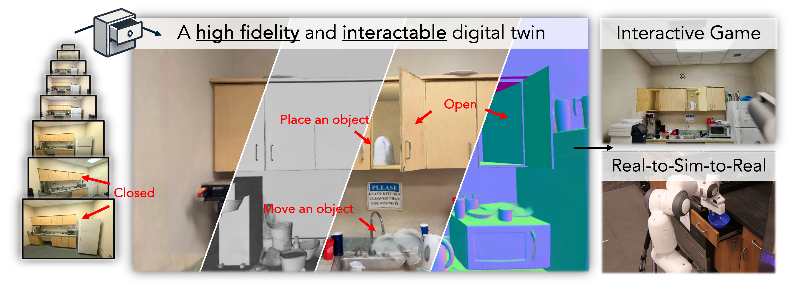

- Hongchi Xia1
- Entong Su3
- Marius Memmel3
- Arhan Jain3
- Raymond Yu3
- Numfor Mbiziwo-Tiapo3
- Ali Farhadi3
- Abhishek Gupta3
- Shenlong Wang1
- Wei-Chiu Ma2
- 1University of Illinois at Urbana-Champaign
- 2Cornell University
- 3University of Washington

Abstract
Creating virtual digital replicas from real-world data unlocks significant potential across domains like gaming and robotics.
In this paper, we present DRAWER, a novel framework that converts a video of a static indoor scene into a photorealistic and interactive digital environment.
Our approach centers on two main contributions:
(i) a reconstruction module based on a dual scene representation that reconstructs the scene with fine-grained geometric details,
and (ii) an articulation module that identifies articulation types and hinge positions, reconstructs simulatable shapes and appearances and integrates them into the scene.
The resulting virtual environment is photorealistic, interactive, and runs in real time, with compatibility for game engines and robotic simulation platforms.
We demonstrate the potential of DRAWER by using it to automatically create an interactive game in Unreal Engine and to enable real-to-sim-to-real transfer for robotics applications.
Interactable 3D reconstruction
We visualize the interactable 3D reconstruction in multiple kitchens. To avoid clutter in visualization, we randomly select a subset of drawers/cabinets to open.
Gaming: Opening the doors
We demonstrate our interactive game in Unreal Engine with game features of opening cabinet and drawer doors.
When the player presses a key, they can push or pull the cabinet/drawer doors in the direction they're aiming, based on where their crosshair is pointing.
Gaming: Shooting rigid objects
We demonstrate our interactive game in Unreal Engine with game features including shooting rigid objects segmented from the scene.
The player can shoot yellow balls with the gun.
Real-to-sim-to-real
We deploy policies trained in simulation in a zero-shot fashion in the real world on a Franka Emika Panda robot mounted on a mobile base.
We trained independent policies for each substage of the problem - drawer closing, picking and placing, and opening.
System Overview
Given multiple posed images from a single video, we employ a dual scene representation that combines high-fidelity rendering with aligned geometry. We then animate the scene with physical reasoning to estimate articulated and movable rigid-body objects. Our amodel shape estimation with hidden region texturing enables us to create an interactable digital twin, supporting real-time physical interactions such as opening drawers/cabinets, moving objects, and rendering novel views.